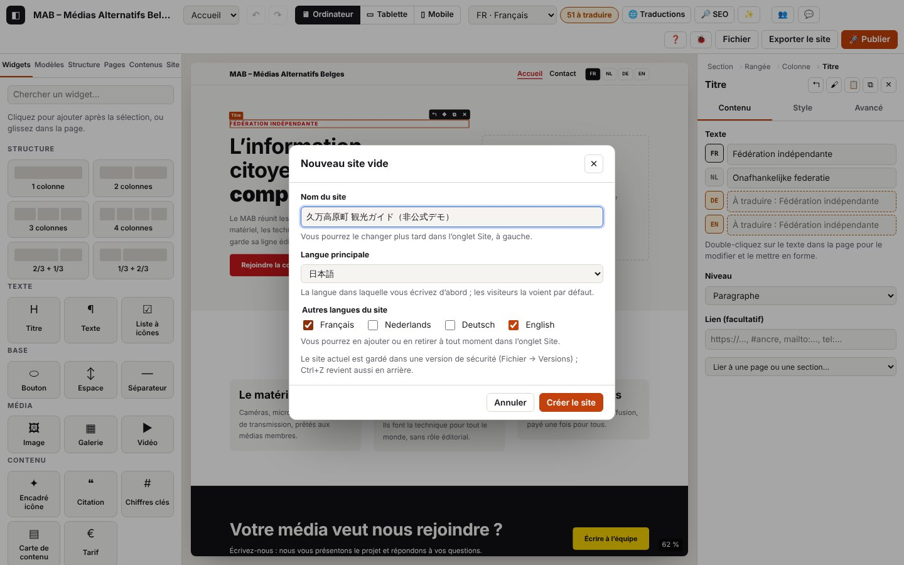

Prise en main : le site touristique de Kumakōgen en deux pages

Sur cette page
- Avant de commencer
- Partie A — Préparer le site
- Partie B — Page 1 « ホーム »
- Partie C — Page 2 « イベント・アクセス »
- Partie D — Finitions, vérification et publication
- Étape 22 — Les prochains événements sur l'accueil
- Étape 23 — Réutiliser un bloc : composant et fenêtre
- Étape 24 — Le site sur un téléphone
- Étape 25 — Un style commun et un peu de mouvement
- Étape 26 — Traduire tout ce qui manque
- Étape 27 — Le référencement (Google)
- Étape 28 — L'IA sur ton ordinateur (facultatif)
- Étape 29 — Enregistrer une version
- Étape 30 — Vérifier, prévisualiser, exporter
- Étape 31 — Publier chez OVH
- Étape 32 — L'auto-test
- Pour aller plus loin
- Récapitulatif : chaque widget, où et quand
Dans ce tutoriel, tu construis pas à pas un vrai petit site touristique : celui de Kumakōgen (久万高原町), une commune de montagne de la préfecture d'Ehime, sur l'île de Shikoku, au Japon. Le site a deux pages et trois langues (japonais, anglais, français). À la fin, tu auras utilisé chaque widget d'Atelier au moins une fois, et presque toutes ses fonctions : langues, couleurs, téléphone, agenda, référencement, versions, vérification, publication.
Compte deux à trois heures, en plusieurs fois si tu veux : Atelier enregistre tout seul.
Tu peux regarder l'atelier le faire : Fichier → Voir une démonstration. Atelier construit lui-même ces deux pages avec ses vrais boutons, étape par étape, en quatre minutes environ (pause, vitesse, étape suivante, arrêt). Ton propre site est mis de côté pendant ce temps et revient intact ; à la fin, tu peux aussi garder le site de Kumakōgen pour continuer ce tutoriel à partir de lui.
Avant de commencer
Ce que tu vas construire
- Page 1 « ホーム » (Accueil) : un grand titre d'accueil, des chiffres clés, trois atouts, des sites à visiter, le pèlerinage, la devise de la commune, les saisons en images, une vidéo, les prochains événements.
- Page 2 « イベント・アクセス » (Agenda & accès) : l'agenda des événements (à venir et passés), comment venir, les coordonnées, une carte, une FAQ, les tarifs d'entrée et un formulaire de contact.
- Sur toutes les pages : un en-tête (logo, menu, choix de la langue) et un pied de page (crédits, réseaux).
Les données sont réelles. Tous les faits (chiffres, dates, adresses, téléphones) viennent du fichier de données vérifiées du projet (docs/exemple-kumakogen/donnees.md), recoupées le 29 octobre 2026 auprès de la commune de Kumakōgen, de la préfecture d'Ehime, de l'Agence météorologique du Japon, de Shikoku Tourism et de la JNTO. Les textes sont des reformulations courtes, pas des copies.
C'est un site de démonstration non officiel. Il ne remplace pas le site de la commune (https://www.kumakogen.jp/). Le tutoriel le dit en toutes lettres dans le pied de page : garde cette mention si tu publies l'exemple. N'utilise ni le blason ni le logo officiels.
Les images. Aucune photo réelle n'est utilisée (elles appartiennent à leurs auteurs). Dans la visite guidée, Atelier dessine des illustrations simples. Si tu suis ce tutoriel à la main, importe n'importe quelle image de ton ordinateur à chaque fois qu'une image est demandée ; ensuite, remplace-les par tes propres photos.
La langue principale. Dans ce site, le japonais est la langue principale : c'est la langue qu'on remplit en premier, celle de l'adresse principale du site. Elle se choisit à la création du site (étape 1) et ne se change plus ensuite.
Dans les tableaux de textes ci-dessous, chaque texte est donné dans les trois langues : recopie-le dans la ligne JA, EN ou FR du réglage.
Ce qu'il te faut : un ordinateur avec un écran d'au moins 1024 pixels de large, et un navigateur récent. Pour l'IA locale (facultative, étape 28) : Chrome récent sur ordinateur.
Comment lire chaque étape : Ce que tu fais (les clics, avec les vrais noms des boutons), Ce que tu vois, Astuce. Le mot de chaque widget renvoie à sa fiche dans Tous les widgets.
Partie A — Préparer le site
Étape 1 — Créer le projet
Ce que tu fais
- Ouvre l'éditeur. En haut à droite : menu Fichier → Nouveau site….
- Dans la fenêtre qui s'ouvre :
- Nom du site :
久万高原町 観光ガイド（非公式デモ）; - Langue principale : 日本語 ;
- Autres langues du site : coche English et Français ;
- Modèle de site : pour ce tutoriel, garde Site vide (on construit tout pour croiser chaque widget). Pour un vrai site, choisis le modèle Tourisme ou commune : accueil, à découvrir, agenda et accès, contact sont créés d'un coup, en japonais, anglais et français, avec le fuseau horaire Asia/Tokyo ; ou pars de zéro avec Site vide.
- Nom du site :
- Clique sur Créer le site.
Ce que tu vois : une page vide au centre (le canevas), le panneau de gauche (Widgets, Modèles, Structure, Pages, Contenus, Site) et l'inspecteur à droite. En haut à droite, « Enregistré » : chaque modification est gardée sur ton ordinateur.
Astuce : avant de remplacer le projet, Atelier a gardé une version de sécurité de l'ancien (Fichier → Versions…). Et Ctrl+Z annule la dernière action, à tout moment.
Étape 2 — Vérifier les langues
Ce que tu fais
- Panneau de gauche, onglet Site, partie Identité → Langues.
- Vérifie que 日本語 (marqué « principale », il ne se décoche pas), English et Français sont cochés. Tu peux ajouter ou retirer une langue ici à tout moment.
Ce que tu vois : en haut de l'écran, la liste des langues propose JA, EN et FR. C'est elle qui choisit la langue affichée et écrite dans le canevas. Le bouton Traductions (icône 文A) (le tableau de toutes les traductions) est disponible dès que le site a deux langues.
Astuce : la langue de l'éditeur lui-même (ses boutons) est un autre réglage : Fichier → Langue de l'interface (français, English, 日本語). Ce tutoriel suppose l'éditeur en français.
Étape 3 — Créer les deux pages
Ce que tu fais
- Onglet Pages. La page d'accueil existe déjà, avec le titre JA
ホーム: déplie sa fiche et complète Titre : ENHome, FRAccueil. - En haut du panneau, dans Titre de la nouvelle page, tape le titre dans la langue principale (
イベント・アクセス), puis + Page. - Dans la fiche de la nouvelle page : Titre EN
Events & access, FRAgenda & accès. - Champ Adresse : remplace l'adresse proposée par
agenda, puis Entrée. - Description pour Google de chaque page (une phrase, 160 caractères au plus) :
| Page | JA | EN | FR |
|---|---|---|---|
| ホーム | 愛媛県の中央、標高約800mの高原のまち・久万高原町の見どころと四季を紹介する非公式デモサイトです。 | Unofficial demo site: the sights and seasons of Kumakōgen, a highland town about 800 m up in central Ehime. | Site de démonstration non officiel : les sites et les saisons de Kumakōgen, commune de montagne au centre d'Ehime. |
| イベント・アクセス | 久万高原町の主なイベント、松山からの行き方、問い合わせ先、入館料をまとめました（非公式デモ）。 | Main events in Kumakōgen, how to get there from Matsuyama, contacts and admission prices (unofficial demo). | Les grands rendez-vous de Kumakōgen, l'accès depuis Matsuyama, les contacts et les tarifs (démonstration non officielle). |
Ce que tu vois : la nouvelle page s'ouvre, vide ; le message « Page « … » créée : /… / » ; le sélecteur de pages en haut de l'écran propose les deux pages. L'accueil reste toujours en premier dans le menu.
Astuce : une adresse de page s'écrit en lettres latines, chiffres et tirets : pour un titre en japonais, Atelier propose une adresse lisible quand il le peut (les katakana sont transcrits), sinon une adresse de secours. Choisir toi-même agenda donne une adresse courte et claire. Pour l'adresse anglaise ou française, le bouton ⟲ propose une adresse à partir du titre traduit.
Étape 4 — Couleurs, polices et logo
Ce que tu fais
- Onglet Site, partie Palette : clique sur la pastille Principale et choisis un vert forêt (par exemple
#2f6b4f) ; Secondaire : un ocre (par exemple#c8902e). Tu peux renommer une couleur dans le champ à côté. - Regarde la liste Contrastes juste dessous : chaque paire doit rester verte ✓. Une paire rouge ✗ veut dire qu'un texte serait peu lisible : fonce ou éclaircis la couleur.
- Partie Typographie : Police des titres :
Source Serif 4; Police du texte :Système (aucun téléchargement). Arrondi des angles :12. - Partie En-tête par défaut → Logo → Importer une image : choisis une illustration (un sommet stylisé, par exemple), jamais le blason officiel.
Ce que tu vois : tout le site change de couleur d'un coup ; le canevas se recharge pour la nouvelle police.
Astuce : avec un logo importé, 🎨 Palette depuis le logo (partie Palette) propose six couleurs tirées du logo, contrastes déjà corrigés ; rien ne change avant Appliquer la palette. Sur les pages japonaises, Atelier ajoute tout seul des polices japonaises de secours après la police choisie.
Étape 5 — En-tête et pied de page en blocs
Widgets rencontrés : Logo du site, Menu, Choix de langue, Texte, Réseaux sociaux.
Ce que tu fais
- Onglet Site → partie En-tête et pied de page → à côté de « En-tête : par défaut », Personnaliser avec des blocs.
- Un bandeau dit « Vous modifiez l'en-tête du site — toutes les pages ». L'en-tête contient trois colonnes : Logo du site, Menu, Choix de langue. Clique sur le Choix de langue → inspecteur, onglet Contenu → Affichage : Noms (Français…).
- Clique sur le Logo du site → Hauteur du logo :
40 px; garde Afficher le nom du site. - Terminer dans le bandeau.
- Même chose pour le Pied de page : Personnaliser avec des blocs. Il contient un Logo du site, un Texte, un Menu (en colonne) et des Réseaux sociaux.
- Double-clique sur le Texte du pied et écris les crédits ci-dessous (change la langue en haut de l'écran pour chaque langue, ou remplis les trois lignes dans l'inspecteur).
- Clique sur Réseaux sociaux → Liens : supprime les trois lignes d'exemple avec ✕, puis + Lien → Réseau :
Site web, Adresse :https://www.kumakogen.jp/(le site officiel de la commune). Terminer.
| Texte du pied | |
|---|---|
| JA | 非公式のデモサイトです。データ：久万高原町、久万高原町観光協会、愛媛県、気象庁、四国ツーリズム創造機構、日本政府観光局（2026年10月29日確認）。イラストはオリジナルです。 |
| EN | Unofficial demo site. Data: Kumakōgen Town, Kumakōgen Tourism Association, Ehime Prefecture, Japan Meteorological Agency, Shikoku Tourism, JNTO (checked on 29 October 2026). Original illustrations. |
| FR | Site de démonstration non officiel. Données : commune de Kumakōgen, office de tourisme de Kumakōgen, préfecture d'Ehime, Agence météorologique du Japon, Shikoku Tourism, JNTO (vérifiées le 29/10/2026). Illustrations originales. |
Ce que tu vois : le menu montre déjà les deux pages ; le choix de langue affiche « 日本語 · English · Français ». Pendant la modification, le reste de la page est grisé.
Astuce : un double-clic sur l'en-tête ou le pied dans la page te ramène à leur modification. Revenir au défaut annule la version en blocs. N'ajoute pas le site de l'office de tourisme (kuma-kanko.com) : il est fermé temporairement depuis le 28/10/2026.
Partie B — Page 1 « ホーム »
Choisis la page ホーム dans le sélecteur en haut de l'écran (ou Ctrl+K, « Page : ホーム »).
Étape 6 — La section d'accueil
Widgets rencontrés : Section, Rangée, Colonne, Titre, Texte, Bouton, Image.
Ce que tu fais
- Onglet Modèles → Modèles de sections → Héros (« Grand titre, texte, deux boutons et une image »).
- Clique sur le petit surtitre en haut à gauche, puis double-clique dessus pour l'écrire (tableau ci-dessous). Fais de même pour le grand titre, le texte et les deux boutons. Un titre ou un bouton se termine par Entrée ; un texte par Échap.
- Sélectionne le premier bouton → Lien → liste Lier à une page ou une section… →
イベント・アクセス (/agenda/). Fais de même pour le second bouton. - Clique sur la zone d'image à droite → Image : Importer une image → Description (pour les lecteurs d'écran et Google) (tableau).
- Appuie sur Échap plusieurs fois : la sélection remonte du widget à sa colonne, à la rangée, puis à la section. Regarde le haut de l'inspecteur : le chemin « Section › Rangée › Colonne › … ».
| Élément | JA | EN | FR |
|---|---|---|---|
| Surtitre (Titre, niveau « Paragraphe ») | 四国の軽井沢 | The Karuizawa of Shikoku | Le « Karuizawa de Shikoku » |
| Grand titre (H1) | 久万高原町へようこそ | Welcome to Kumakōgen | Bienvenue à Kumakōgen |
| Texte | 愛媛県のほぼ中央、標高およそ800mの高原のまち。夏は涼しく、冬は雪に包まれます。 | A highland town in the heart of Ehime, about 800 m above sea level, with cool summers and snowy winters. | Une commune de montagne au centre de la préfecture d'Ehime, à environ 800 m d'altitude, aux étés frais et aux hivers enneigés. |
| Bouton 1 | イベントを見る | See the events | Voir l'agenda |
| Bouton 2 | アクセス | Getting here | Venir à Kumakōgen |
| Description de l'image | 高原の風景のイラスト | Illustration of a highland landscape | Illustration d'un paysage de montagne |
Ce que tu vois : une section en deux colonnes, texte à gauche, image à droite ; dans la page, le widget sélectionné porte la barre ↰ ✥ ⧉ ✕.
Astuce : les textes d'exemple des modèles sont en français. Si le japonais est ta langue principale, la ligne JA peut être vide au départ (la page paraît vide en japonais) : remplis-la, puis les autres. Un seul H1 par page : c'est le grand titre.
Étape 7 — Écrire dans une autre langue
Ce que tu fais
- En haut de l'écran, choisis EN · English dans la liste des langues.
- Double-clique sur le grand titre : tu écris maintenant la version anglaise. Fais de même en FR.
- Reviens en JA.
Ce que tu vois : le canevas se recharge dans la langue choisie ; dans l'inspecteur, la ligne de la langue affichée est mise en avant ; une ligne non traduite est teintée et montre « À traduire : … ».
Astuce : en haut, un badge « N à traduire » compte ce qui manque. Pas besoin de tout traduire au fil de l'eau : l'étape 26 montre le tableau qui rassemble tout.
Étape 8 — Les chiffres clés
Widget rencontré : Chiffres clés.
Ce que tu fais
- Sélectionne la section d'accueil, puis Modèles → Chiffres clés : la section s'ajoute juste après.
- Clique sur les chiffres → inspecteur, Chiffres : remplace les trois lignes et ajoute la quatrième avec + Chiffre.
| Valeur (la même dans les trois langues) | Légende JA | Légende EN | Légende FR |
|---|---|---|---|
| 584 km² | 愛媛県でいちばん広い町 | the largest municipality in Ehime | la plus grande commune d'Ehime |
| ≈ 800 m | 平均標高 | average altitude | altitude moyenne |
| 12.8 °C | 年平均気温（松山は16.8 °C） | average yearly temperature (Matsuyama: 16.8 °C) | température moyenne annuelle (Matsuyama : 16,8 °C) |
| 1982 m | 石鎚山・西日本最高峰 | Mt Ishizuchi, highest peak in western Japan | mont Ishizuchi, plus haut sommet de l'ouest du Japon |
Ce que tu vois : un bandeau de couleur principale avec quatre grands chiffres ; sur un téléphone, ils passeront l'un sous l'autre.
Astuce : la valeur ne se traduit pas : écris-la d'une façon lisible dans les trois langues (12.8 °C plutôt que 12,8 °C). Sources : commune de Kumakōgen (superficie, altitude), Agence météorologique du Japon, normales 1991–2020 (températures), ville de Saijō (Ishizuchi).
Étape 9 — Trois façons de découvrir Kumakōgen
Widget rencontré : Encadré icône.
Ce que tu fais
- Modèles → Avantages (« Titre et trois encadrés à icône »).
- Écris le titre et la phrase d'introduction, puis, pour chaque encadré : Icône, Titre, Texte.
| Élément | JA | EN | FR |
|---|---|---|---|
| Titre | 久万高原町の楽しみ方 | Three ways to enjoy Kumakōgen | Trois façons de découvrir Kumakōgen |
| Introduction | 大自然、お遍路、そして星空。 | Nature, pilgrimage and starry skies. | Nature, pèlerinage et ciel étoilé. |
| Encadré 1 — icône Monde | 大自然 / 四国カルストの高原と、エメラルド色の面河渓。 | Nature / The Shikoku Karst plateau and the emerald Omogo Gorge. | Nature / Le plateau du Shikoku Karst et les gorges émeraude d'Omogo. |
| Encadré 2 — icône Lieu | お遍路 / 四国八十八ヶ所の第44番・第45番札所があります。 | Pilgrimage / Temples 44 and 45 of the Shikoku 88-temple pilgrimage. | Pèlerinage / Les temples 44 et 45 du pèlerinage des 88 temples de Shikoku. |
| Encadré 3 — icône Étoile | 星空 / 口径60cmの望遠鏡を備えた天体観測館。 | Starry skies / An observatory with a 60 cm telescope. | Ciel étoilé / Un observatoire équipé d'un télescope de 60 cm. |
(Dans chaque case « Encadré », la partie avant « / » est le Titre, la partie après est le Texte.)
Ce que tu vois : une rangée de trois encadrés sous un titre centré. Cette section a deux rangées : une pour le titre, une pour les encadrés.
Astuce : Disposition de l'encadré : Icône au-dessus, Icône à gauche ou Centré.
Étape 10 — Les sites à visiter
Widget rencontré : Carte de contenu.
Ce que tu fais
- Modèles → Actualités (« Trois cartes avec image, texte et lien »).
- Titre de la section : JA
おすすめスポット, ENPlaces to visit, FRSites à visiter. - Pour chaque carte : Image (importe une illustration), Description de l'image, Titre, Texte. Vide le Texte du lien : sans lien, la ligne « … → » disparaît.
| Carte | JA | EN | FR |
|---|---|---|---|
| 1. Titre | 四国カルスト | Shikoku Karst | Shikoku Karst |
| 1. Texte | 標高1,000〜1,500mに広がるカルスト台地。牛の放牧と大パノラマが楽しめます。冬は道路が閉鎖されます。 | A limestone plateau 1,000 to 1,500 m up, with grazing cattle and sweeping views. The road closes in winter. | Un plateau calcaire entre 1 000 et 1 500 m d'altitude, avec des vaches en pâture et une vue immense. Route fermée en hiver. |
| 2. Titre | 面河渓 | Omogo Gorge | Gorges d'Omogo |
| 2. Texte | エメラルドグリーンの清流と奇岩が続く渓谷。秋の紅葉は四国屈指の美しさです。 | An emerald-water gorge with easy riverside trails, famous for its autumn colours. | Une gorge aux eaux émeraude, avec des sentiers faciles et l'un des plus beaux feuillages d'automne de Shikoku. |
| 3. Titre | 古岩屋 | Furuiwaya | Furuiwaya |
| 3. Texte | 円錐形の礫岩峰が林立する国の名勝。紅葉の季節が特に見事です。 | A cluster of striking conglomerate rock spires, explored on a short loop trail. | Une forêt de pitons rocheux étonnants, à parcourir en une courte boucle. |
Ce que tu vois : trois vignettes côte à côte ; une case grise « Image » tant qu'aucune image n'est choisie.
Astuce : pour une liste qui se met à jour toute seule (des événements), la carte de contenu ne suffit pas : c'est le rôle de la Liste de contenus (étape 17).
Étape 11 — Le pèlerinage
Widgets rencontrés : Liste à icônes, Image.
Ce que tu fais
- Modèles → Texte et image (« Paragraphe à gauche, image à droite »).
- Titre, puis le texte : double-clique dedans, remplace le premier paragraphe et efface le second.
- Clique sur la Liste à icônes → Éléments : pour chaque ligne, Icône et Texte.
- Image à droite : importe une illustration (un temple dans les cèdres), Description : JA
杉木立の中の寺のイラスト, ENIllustration of a temple among cedars, FRIllustration d'un temple dans les cèdres.
| Élément | JA | EN | FR |
|---|---|---|---|
| Titre | お遍路の道 | On the pilgrims' path | Sur le chemin des pèlerins |
| Texte | 四国八十八ヶ所霊場のうち、第44番大宝寺と第45番岩屋寺が町内にあります。両寺の間は歩いて約9km、約3時間30分です。 | Two temples of the Shikoku 88-temple pilgrimage are in Kumakōgen: Daihō-ji (no. 44) and Iwaya-ji (no. 45). They are about 9 km apart on foot, around 3 h 30. | Deux temples du pèlerinage des 88 temples de Shikoku sont à Kumakōgen : le Daihō-ji (n° 44) et l'Iwaya-ji (n° 45). Ils sont à environ 9 km l'un de l'autre à pied, soit environ 3 h 30. |
| Ligne 1 — icône Lieu | 第44番 大宝寺：701年創建と伝わる「中札所」 | No. 44 Daihō-ji: founded in 701, the "middle temple" of the pilgrimage | N° 44 Daihō-ji : fondé en 701, le « temple du milieu » du pèlerinage |
| Ligne 2 — icône Lieu | 第45番 岩屋寺：巨大な岩壁に抱かれた札所（石段は約266段） | No. 45 Iwaya-ji: built against a huge rock face (about 266 steps) | N° 45 Iwaya-ji : adossé à une immense falaise (environ 266 marches) |
| Ligne 3 — icône Horloge | 44番から45番まで徒歩約3時間30分 | From no. 44 to no. 45: about 3 h 30 on foot | Du n° 44 au n° 45 : environ 3 h 30 à pied |
Ce que tu vois : texte et liste à gauche, image à droite ; les icônes prennent la couleur principale.
Astuce : + Élément ajoute une ligne ; ↑ ↓ changent l'ordre ; ✕ supprime.
Étape 12 — La devise de la commune
Widget rencontré : Citation.
Ce que tu fais
- Sélectionne la Liste à icônes du pèlerinage (la citation viendra juste après, dans la même colonne).
- Onglet Widgets → famille Contenu → Citation.
- Citation, Auteur :
久万高原町, Fonction ou média, Apparence : Grande citation.
| Élément | JA | EN | FR |
|---|---|---|---|
| Citation | ひと・里・森がふれあい ともに輝く 元気なまち | A lively town where people, villages and forests meet and shine together | Une commune vivante où les gens, les villages et la forêt se rencontrent et brillent ensemble |
| Fonction ou média | まちの将来像（町の公式サイトより） | The town's vision for the future (official website; our translation) | La vision d'avenir de la commune (site officiel ; notre traduction) |
Ce que tu vois : la phrase en grand, avec un guillemet de couleur.
Astuce : une citation doit être réelle : ici, c'est la devise officielle publiée par la commune. Ne prête jamais à quelqu'un des paroles qu'il n'a pas dites.
Étape 13 — Les saisons en images
Widgets rencontrés : Espace, Galerie.
Ce que tu fais
- Sélectionne la section du pèlerinage, puis Modèles → Galerie.
- Titre : JA
四季の久万高原, ENKumakōgen through the seasons, FRKumakōgen au fil des saisons. - Clique sur la galerie → Images : trois cases existent, ajoute la quatrième avec + Image. Pour chacune : Image, Description, Légende (même texte pour les deux, tableau). Colonnes (ordinateur) :
4; garde Agrandir au clic. - Sélectionne le titre de la galerie, puis Widgets → famille Base → Espace : il se place sous le titre. Hauteur :
32 px. Onglet Avancé → Masquer sur : coche Mobile.
| Image | JA | EN | FR |
|---|---|---|---|
| 1 | 春〜秋：四国カルストの放牧 | Spring to autumn: cattle grazing on the Shikoku Karst | Du printemps à l'automne : vaches sur le Shikoku Karst |
| 2 | 夏：天体観測館で星空観察 | Summer: stargazing at the observatory | Été : les étoiles à l'observatoire |
| 3 | 秋：面河渓の紅葉 | Autumn: autumn colours in the Omogo Gorge | Automne : feuillages des gorges d'Omogo |
| 4 | 冬：久万スキーランド | Winter: Kuma Ski Land | Hiver : Kuma Ski Land |
Ce que tu vois : quatre vignettes sur une ligne. Dans l'éditeur, l'espace masqué sur mobile reste visible en transparence (pour pouvoir le sélectionner).
Astuce : sur le site publié, un clic agrandit l'image ; Échap la referme. Sur un téléphone, la galerie passe à deux images par ligne.
Étape 14 — Une vidéo
Widget rencontré : Vidéo.
Ce que tu fais
- Modèles → Vidéo (« Titre centré et vidéo »).
- Titre : JA
動画で見る久万高原町, ENKumakōgen on video, FRKumakōgen en vidéo. - Clique sur la vidéo → Adresse YouTube ou Vimeo : [donnée Kumakōgen à compléter : adresse d'une vidéo publiée par la commune ou l'office de tourisme]. Titre (lu par les lecteurs d'écran) : le titre de cette vidéo. Image d'aperçu (facultatif) : une illustration.
Ce que tu vois : une image avec un bouton ▶. Tant qu'il n'y a pas d'adresse, le canevas affiche « Collez une adresse YouTube ou Vimeo dans l'inspecteur ».
Astuce : sur le site publié, rien n'est chargé chez YouTube avant le clic du visiteur. Si tu n'as pas de vidéo officielle, supprime cette section avant de publier : la vérification avant export signale une vidéo sans adresse.
Partie C — Page 2 « イベント・アクセス »
Ouvre la page イベント・アクセス (sélecteur en haut, ou Ctrl+K, « Page : イベント・アクセス »).
Étape 15 — Titre et introduction
Widgets rencontrés : Section, Titre, Texte.
Ce que tu fais
- Onglet Widgets → tout en haut, famille Structure → 1 colonne : une section vide s'ajoute.
- Famille Texte → Titre ; dans l'inspecteur, Niveau : H1 – titre de page. Puis Texte.
| Élément | JA | EN | FR |
|---|---|---|---|
| Titre (H1) | イベントとアクセス | Events and getting here | Agenda et accès |
| Texte | 久万高原町の主なイベントと、松山からの行き方をまとめました。日程は年によって変わることがあります。お出かけ前に公式情報をご確認ください。 | The main events in Kumakōgen and how to get here from Matsuyama. Dates can change from year to year: please check official information before you go. | Les grands rendez-vous de Kumakōgen et l'accès depuis Matsuyama. Les dates peuvent changer d'une année à l'autre : vérifie les informations officielles avant de partir. |
Ce que tu vois : un widget ajouté par clic se place juste après le widget sélectionné ; si c'est une section qui est sélectionnée, il va dans sa première colonne ; sans sélection, Atelier crée une nouvelle section à la fin de la page.
Astuce : tu peux aussi glisser un widget depuis le panneau jusqu'à l'endroit voulu : une ligne bleue montre où il tombera.
Étape 16 — Créer l'agenda
Ce que tu fais
- Onglet Contenus → + Nouvelle collection.
- Type de collection : 📅 Agenda. Garde le nom
Agenda. Décoche « Créer aussi la page de liste (ajoutée au menu) » (la page 2 jouera ce rôle) et « Ajouter quelques exemples à remplacer ». Créer la collection. - Dans le panneau Contenus, clique sur Agenda : la fenêtre de la collection s'ouvre (onglets Éléments, Champs, Réglages).
- Onglet Réglages : vérifie que l'adresse des pages d'éléments est
agendaet que Page de liste (lien « retour ») indique la page イベント・アクセス (« Automatique », car elle a la même adresse ; sinon, choisis-la dans la liste). - Onglet Éléments → + Ajouter pour chaque événement du tableau. Remplis les champs, change l'adresse de l'élément (au-dessus du formulaire), puis passe le Statut de l'élément de ○ Brouillon (jamais publié) à ● Publié.
| Événement | Titre (JA / EN / FR) | Date, heure | Lieu · Adresse | Description (JA / EN / FR) |
|---|---|---|---|---|
Adresse oyamabiraki | 石鎚山お山開き / Mt Ishizuchi season opening (O-yamabiraki) / Ouverture de la saison du mont Ishizuchi | Date 2027-07-01, Date de fin 2027-07-10 | 石鎚神社 土小屋遥拝殿 (Tsuchigoya) · vide | 毎年7月1日〜10日。期間中、石鎚スカイラインは午前4時から通行できます。 / Every year from 1 to 10 July. During the festival, the Ishizuchi Skyline road opens at 4 am. / Chaque année du 1er au 10 juillet. Pendant la fête, la route Ishizuchi Skyline ouvre dès 4 h. |
Adresse joya-no-kane | 大宝寺の除夜の鐘 / New Year's Eve bell at Daihō-ji / Cloche du Nouvel An au Daihō-ji | Date 2026-12-31, Heure de début 23:45 | 大宝寺 Daihō-ji (n° 44) · 愛媛県上浮穴郡久万高原町菅生2-1173-2 | どなたでも並んで鐘をつくことができます（無料）。 / Everyone can queue to ring the bell, free of charge. / Chacun peut faire la queue pour sonner la cloche, gratuitement. |
Adresse kumabi-messe-2026 | 久万美メッセ2026「流動」 / Kumabi Messe 2026 exhibition / Exposition Kumabi Messe 2026 | Date 2026-04-26, Date de fin 2026-09-03 | 町立久万美術館 Kuma Art Museum · 愛媛県上浮穴郡久万高原町菅生2番耕地1442-7 | 町立久万美術館の展覧会。2026年のテーマは「流動」。 / An exhibition at the Kuma Art Museum; the 2026 theme is "Ryūdō". / Une exposition du musée d'art Kuma ; thème 2026 : « Ryūdō ». |
Adresse kuma-ski-land-2025 | 久万スキーランド 2025-26シーズン / Kuma Ski Land, 2025-26 season / Kuma Ski Land, saison 2025-2026 | Date 2025-12-08, Date de fin 2026-03-08 | 久万スキーランド Kuma Ski Land · 愛媛県上浮穴郡久万高原町東明神 | 標高900〜1,003mのゲレンデ。ナイターは22時まで。 / Slopes from 900 to 1,003 m; night skiing until 10 pm. / Pistes de 900 à 1 003 m ; ski de nuit jusqu'à 22 h. |
Pour l'exposition, Inscription ou billetterie : https://www.kumakogen.jp/site/muse/26148.html (la page officielle du musée). Laisse Statut sur « Prévu » pour tous.
Ce que tu vois : la liste des éléments, avec leur date ; un élément en brouillon est marqué comme tel et n'apparaîtra nulle part sur le site.
Astuce : Lieu et Adresse ne se traduisent pas : écris-les une fois, en japonais suivi du nom en lettres latines. Les dates s'écrivent AAAA-MM-JJ. La fête de l'Ishizuchi revient chaque année aux mêmes dates ; les deux autres événements sont déjà passés : ils serviront à la liste « Passés ». Les dates de la saison de ski 2026-2027 sont annoncées en novembre : ajoute-les quand elles seront publiées. Pour beaucoup d'éléments, ⇧ Importer un CSV les reprend d'un tableur.
Étape 17 — Afficher l'agenda
Widgets rencontrés : Liste de contenus, Séparateur.
Ce que tu fais
- Sélectionne le texte d'introduction. Widgets → Titre : JA
これからのイベント, ENUpcoming events, FRProchains événements. - Famille Contenus → Liste de contenus. Inspecteur : Collection :
Agenda (4); Disposition : Grille de cartes ; Colonnes (ordinateur) :2; Événements : À venir ; Texte si la liste est vide : JA現在予定されているイベントはありません。, ENNo upcoming events for now., FRAucun événement à venir pour l'instant. - Famille Base → Séparateur : Trait : Pointillés, Longueur :
50 %. - Un Titre : JA
これまでのイベント, ENPast events, FRÉvénements passés; puis une deuxième Liste de contenus : même collection, Événements : Passés, Sens : Décroissant (Z→A, plus récent d'abord).
Ce que tu vois : deux cartes « à venir » (l'Ouverture de l'Ishizuchi et la cloche du Nouvel An), un trait, puis deux cartes « passées ». Chaque carte montre l'image, la date, le titre, le lieu et un lien vers la page de l'événement.
Astuce : sur le site publié, c'est la date du visiteur qui compte : le 1er janvier 2027, la cloche du Nouvel An passera toute seule dans « Passés », sans republier. L'encadré en haut de l'inspecteur propose Gérer les éléments, ✎ Carte et ✎ Page de détail.
Étape 18 — Dessiner la carte d'un événement et sa page
Widget rencontré : Champ.
Ce que tu fais
- Double-clique sur une des listes (ou ✎ Carte dans l'inspecteur). Le bandeau dit « Vous modifiez la carte de « Agenda » — toutes les listes de cette collection suivront ».
- Dans la liste Aperçu : … du bandeau, choisis
大宝寺の除夜の鐘: la carte s'affiche avec ses vraies valeurs. - Sélectionne le Champ du lieu (icône de lieu), puis Widgets → famille Contenus → Champ : il se place juste dessous. Champ affiché :
Adresse; Libellé avant la valeur (facultatif) : JA住所：, ENAddress:, FRAdresse :; Icône : Aucune. - Terminer. Puis, dans l'inspecteur d'une liste, ✎ Page de détail : c'est la page de chaque événement (titre, date et heure, lieu, adresse, image, description, bouton « Ajouter à mon agenda »). Regarde-la avec plusieurs éléments d'aperçu, puis Terminer.
Ce que tu vois : l'adresse apparaît sur toutes les cartes de l'agenda, dans les deux listes, avec la valeur de chaque événement ; si un événement n'a pas d'adresse, rien ne s'affiche.
Astuce : la date s'écrit dans la langue de la page (en japonais : « 2026年12月31日… ») ; Format des dates choisit la forme longue, courte ou complète. Sur le site publié, le bouton « Ajouter à mon agenda » donne un fichier que le téléphone du visiteur ajoute à son calendrier.
Étape 19 — Accès et contact
Widgets rencontrés : Liste à icônes, Carte géographique, Réseaux sociaux, Formulaire, Texte.
Ce que tu fais
- Sélectionne la section de l'agenda, puis Modèles → Contact (« Coordonnées, carte et formulaire »).
- Sélectionne la section → onglet Avancé → Ancre (pour un lien #ancre) : remplace
contactparacces. - Titre de gauche : JA
アクセス・お問い合わせ, ENGetting here & contacts, FRAccès et contacts. Sous le titre, ajoute un Texte (tableau). - Liste à icônes : remplace les trois lignes par celles du tableau (icône Téléphone pour les trois premières, Lieu pour la dernière). Pour un numéro, double-clique sur la ligne, sélectionne le numéro, 🔗 et tape
tel:0892211111(par exemple) : sur un téléphone, un toucher lancera l'appel. - Carte : Adresse :
愛媛県上浮穴郡久万高原町入野1855-6; Zoom (3 à 20) :15; Hauteur :320 px. - Le modèle contient aussi des Réseaux sociaux : ils sont déjà dans le pied de page, supprime ceux-ci (✕).
- Formulaire (à droite) : Adresse qui reçoit les messages : ta propre adresse e-mail (c'est un site de démonstration : n'y mets pas une adresse de la mairie) ; traduis Objet du message, les libellés des Champs (お名前 / Name / Nom ; メールアドレス / Email / E-mail ; メッセージ / Message / Message), Texte du bouton (送信 / Send / Envoyer) et Mention vie privée (facultatif).
| Élément | JA | EN | FR |
|---|---|---|---|
| Texte d'accès | 松山から国道33号（三坂峠経由）で約34km、松山ICから町の中心部まで車で約30分です。町内に鉄道の駅はありません。JR松山駅からJR四国バスで約1時間〜1時間10分です。 | About 34 km from Matsuyama on Route 33 (via the Mikasa Pass), around 30 minutes by car from Matsuyama IC to the town centre. There is no railway station in the town: the JR Shikoku bus from JR Matsuyama Station takes about 1 h to 1 h 10. | Environ 34 km depuis Matsuyama par la route nationale 33 (col de Mikasa), soit environ 30 minutes en voiture de l'échangeur Matsuyama IC au centre. Il n'y a pas de gare dans la commune : le bus JR Shikoku met environ 1 h à 1 h 10 depuis la gare JR de Matsuyama. |
| Ligne 1 | 久万高原町役場 0892-21-1111 | Kumakōgen Town Office: +81 892-21-1111 | Mairie de Kumakōgen : +81 892-21-1111 |
| Ligne 2 | 観光振興係 0892-21-1116 | Tourism section of the Town Office: +81 892-21-1116 | Service du tourisme de la mairie : +81 892-21-1116 |
| Ligne 3 | 久万高原町観光協会 0892-21-1192 | Kumakōgen Tourism Association: +81 892-21-1192 | Office de tourisme de Kumakōgen : +81 892-21-1192 |
| Ligne 4 | 道の駅 天空の郷さんさん（観光案内 9:00〜17:00）〒791-1202 久万高原町入野1855-6 | Roadside station Tenkū no Sato Sansan (tourist information, 9 am–5 pm) | Aire routière Tenkū no Sato Sansan (information touristique, 9 h–17 h) |
| Objet du message | サイトからのお問い合わせ | Message from the website | Message depuis le site |
| Mention vie privée | いただいた情報は返信のためだけに使います。 | Your details are only used to reply to you. | Vos données servent uniquement à vous répondre. |
Ajoute sous la liste un petit Texte : JA 公開情報（2026年10月29日確認）, EN Public information, checked on 29 October 2026, FR Données publiques, vérifiées le 29/10/2026.
Ce que tu vois : à gauche les coordonnées et la carte, à droite le formulaire. Sans adresse de réception, le formulaire affiche « ⚠ Indiquez l'adresse qui reçoit les messages dans l'inspecteur ».
Astuce : la carte ne charge Google Maps qu'au clic du visiteur ; un lien OpenStreetMap est proposé à côté. N'invente jamais une adresse e-mail officielle : la seule adresse publique trouvée est celle d'une personne, ne l'utilise pas.
Étape 20 — Questions fréquentes
Widget rencontré : Accordéon (FAQ).
Ce que tu fais
- Modèles → Questions fréquentes (« Titre et accordéon ») : une section avec un titre et un accordéon centrés.
- Titre : JA
よくある質問, ENFrequently asked questions, FRQuestions fréquentes. - Accordéon → Questions : remplace les deux questions d'exemple et ajoute les deux autres avec + Question. Garde Première réponse ouverte et Signaler à Google comme FAQ (données structurées).
| JA | EN | FR | |
|---|---|---|---|
| Q1 | 松山からどうやって行けますか？ | How do I get there from Matsuyama? | Comment venir depuis Matsuyama ? |
| R1 | 車なら国道33号で約34km、松山ICから町の中心部まで約30分です。バスはJR松山駅からJR四国バスで約1時間〜1時間10分。本数が少ないので、JR四国バスと伊予鉄南予バスの時刻表をご確認ください。 | By car, about 34 km on Route 33, around 30 minutes from Matsuyama IC to the town centre. By bus, the JR Shikoku bus from JR Matsuyama Station takes about 1 h to 1 h 10. Buses are infrequent: check the JR Shikoku Bus and Iyotetsu Nanyo Bus timetables. | En voiture, environ 34 km par la route 33, soit environ 30 minutes de Matsuyama IC au centre. En bus, le bus JR Shikoku met environ 1 h à 1 h 10 depuis la gare JR de Matsuyama. Les bus sont rares : consulte les horaires de JR Shikoku Bus et d'Iyotetsu Nanyo Bus. |
| Q2 | 町内に駅はありますか？ | Is there a train station? | Y a-t-il une gare ? |
| R2 | 町内に鉄道の駅はありません。JR四国バスで「久万中学校前」または「久万高原」まで行き、伊予鉄南予バスや町営バスに乗り換えます。 | No, there is no railway station in the town. Take the JR Shikoku bus to "Kuma Chūgakkō-mae" or "Kumakōgen", then change to Iyotetsu Nanyo buses or town buses. | Non, la commune n'a pas de gare. Le bus JR Shikoku va jusqu'aux arrêts « Kuma Chūgakkō-mae » ou « Kumakōgen » ; on continue avec les bus Iyotetsu Nanyo ou les bus municipaux. |
| Q3 | おすすめの季節は？ | When is the best time to visit? | Quelle est la meilleure saison ? |
| R3 | 夏は涼しく（8月の平均気温は24.5 °C、松山は28.1 °C）、星空も楽しめます。秋（10月〜11月中旬）は紅葉の季節です。石鎚スカイラインは4月〜11月に通行でき、12月〜3月は閉鎖されます。冬は雪が多く、スキーが楽しめます。 | Summer is cool (24.5 °C on average in August, against 28.1 °C in Matsuyama) and great for stargazing. Autumn (October to mid-November) brings the autumn colours. The Ishizuchi Skyline road is open from April to November and closed from December to March. Winter is snowy, with skiing. | L'été est frais (24,5 °C en moyenne en août, contre 28,1 °C à Matsuyama) et idéal pour les étoiles. L'automne (octobre à mi-novembre) est la saison des feuillages. La route Ishizuchi Skyline est ouverte d'avril à novembre et fermée de décembre à mars. L'hiver est enneigé : on y skie. |
| Q4 | どこに泊まれますか？ | Where can I stay? | Où dormir ? |
| R4 | 天体観測館のとなりの「久万高原ふるさと旅行村」に、通年のコテージ・バンガローと、4月〜11月末のキャンプ場があります（0892-41-0711）。ほかの宿は観光協会（0892-21-1192）へお問い合わせください。 | Kumakōgen Furusato Ryokō-mura, next to the observatory, has cabins and bungalows all year and a campsite from April to the end of November (+81 892-41-0711). For other places to stay, contact the Tourism Association (+81 892-21-1192). | Le village de vacances Kumakōgen Furusato Ryokō-mura, à côté de l'observatoire, propose des chalets et bungalows toute l'année et un camping d'avril à fin novembre (+81 892-41-0711). Pour les autres hébergements, contacte l'office de tourisme (+81 892-21-1192). |
Ce que tu vois : les questions, la première ouverte ; un clic ouvre ou ferme une réponse.
Astuce : une réponse peut contenir du gras ou un lien (double-clic dans la page). L'option « Signaler à Google comme FAQ » ajoute au site publié une description que Google sait lire.
Étape 21 — Les tarifs d'entrée
Widget rencontré : Tarif.
Ce que tu fais
- Modèles → Tarifs (« Trois formules, celle du milieu mise en avant »).
- Titre : JA
入館料（大人）, ENAdmission (adults), FRTarifs d'entrée (adultes); introduction : JA2026年10月29日時点の情報です。最新の料金は各施設にご確認ください。, ENInformation checked on 29 October 2026: please check prices with each venue., FRInformations vérifiées le 29/10/2026 : vérifie les tarifs auprès de chaque lieu. - Pour chaque Tarif : Formule, Prix (ex. 49 €), Période (ex. par mois), Ce qui est inclus (liste à puces) (une ligne par puce), Texte du bouton et Lien du bouton. Celui du milieu garde Mettre en avant et reçoit un Badge.
| 1 | 2 (mis en avant) | 3 | |
|---|---|---|---|
| Formule | 町立久万美術館 / Kuma Art Museum / Musée d'art Kuma | 天体観測館 / Astronomical Observatory / Observatoire astronomique | 上黒岩考古館 / Kamikuroiwa site museum / Musée du site de Kamikuroiwa |
| Prix | ¥500 | ¥500 | ¥100 |
| Période | 大人（2026年の展覧会）/ adults (2026 exhibition) / adulte (exposition 2026) | 大人 / adults / adulte | 大人 / adults / adulte |
| Inclus | 9:30〜17:00（入館は16:30まで）・月曜休館 / 9:30 am–5 pm (last entry 4:30 pm) · closed on Mondays / 9 h 30–17 h (dernière entrée 16 h 30) · fermé le lundi | 観望会：金・土 19:00〜22:00（予約制）・口径60cmの反射望遠鏡 / Night viewing: Fri & Sat 7–10 pm (booking required) · 60 cm reflecting telescope / Observation : vendredi et samedi 19 h–22 h, sur réservation · télescope à miroir de 60 cm | 4月〜11月 9:00〜17:00・月曜休館・縄文時代の岩陰遺跡 / April–November, 9 am–5 pm · closed on Mondays · Jōmon-period rock shelter / Avril à novembre, 9 h–17 h · fermé le lundi · abri sous roche de la période Jōmon |
| Bouton | 公式ページ / Official page / Page officielle → https://www.kumakogen.jp/site/muse/ | (vide : pas de bouton) | (vide : pas de bouton) |
| Badge | (vide) | 夏は天の川 / Milky Way in summer / Voie lactée en été | (vide) |
(Dans les cases à trois langues, l'ordre est JA / EN / FR ; le signe « · » sépare deux puces.)
Ce que tu vois : trois colonnes ; celle du milieu a une bordure de couleur et le badge au-dessus.
Astuce : le prix ne se traduit pas : ¥500 se lit dans les trois langues. Un texte de bouton vide supprime le bouton.
Partie D — Finitions, vérification et publication
Étape 22 — Les prochains événements sur l'accueil
Widget rencontré : Liste de contenus (deuxième usage).
Ce que tu fais
- Ctrl+K, tape « page ホーム », Entrée.
- Sélectionne la section des saisons. Widgets → Structure → 1 colonne.
- Titre : JA
これからのイベント, ENUpcoming events, FRProchains événements; puis Liste de contenus : CollectionAgenda, Événements : À venir, Nombre maximum (0 = tous) :3, Lien sous la liste (ex. Voir tout l'agenda) : JAイベント一覧へ, ENAll events, FRTout l'agenda; Adresse du lien sous la liste : choisis la page イベント・アクセス dans la liste Lier à une page ou une section….
Ce que tu vois : les événements à venir, et un bouton qui mène à la page 2. La carte est la même que sur la page 2 : tu l'as dessinée une seule fois.
Astuce : Ctrl+K trouve tout : une page (« Page : … »), un widget à ajouter (« Ajouter : … »), un modèle, un réglage de style, un élément de la page (tape un mot de son texte).
Étape 23 — Réutiliser un bloc : composant et fenêtre
Ce que tu fais
- Page イベント・アクセス : clic droit sur la Liste à icônes des coordonnées → Créer un composant… → nom :
Coordonnées. - Page ホーム : sélectionne le second bouton de l'accueil (アクセス) → Lien → liste Lier à une page ou une section… → groupe Ouvrir en fenêtre (popup) →
▣ Coordonnées. - Pour modifier les coordonnées plus tard : double-clique sur le composant (ou Modifier le composant), modifie, Terminer : partout où il est utilisé, il change.
Ce que tu vois : les instances de composant ont un contour violet pointillé. Sur le site publié, le bouton アクセス ouvre une petite fenêtre avec les coordonnées ; sa croix (ou Échap) la ferme.
Astuce : onglet Modèles → Mes composants : clique sur un composant pour l'insérer sur une autre page. Détacher en fait une copie indépendante.
Étape 24 — Le site sur un téléphone
Ce que tu fais
- En haut de l'écran, bouton Mobile (▯) : la page s'affiche à la largeur d'un téléphone.
- Fais défiler : les colonnes sont passées l'une sous l'autre ; le menu s'est replié derrière le bouton « ☰ メニュー ».
- Sélectionne le grand titre de l'accueil → onglet Style → bouton Mobile de l'onglet → groupe Typographie → Taille → liste Échelle… : Titre 2. Ce réglage ne vaut que pour le mobile.
- Bouton bouton aux trois écrans de l'onglet Style : les trois appareils côte à côte, pour comparer.
- Reviens sur Ordinateur (🖥) ; regarde aussi Tablette (▭).
Ce que tu vois : sur le mobile, l'espace de l'étape 13 a disparu ; le titre est plus petit. Un réglage fait sur ordinateur vaut partout, sauf si tu le changes pour la tablette ou le mobile.
Astuce : pour qu'une rangée garde ses colonnes côte à côte même sur téléphone, sélectionne la rangée → Empiler les colonnes : Jamais. ↺ à côté d'un réglage revient à la valeur héritée.
Étape 25 — Un style commun et un peu de mouvement
Ce que tu fais
- Sélectionne le premier bouton de l'accueil → onglet Style → + Preset → nom
Bouton principal→ Créer. Coche Par défaut pour les « Bouton » : chaque nouveau bouton le recevra. - Sélectionne la première carte des sites à visiter → onglet Style → groupe Effets → Apparition au défilement :
up. Fais de même pour les deux autres cartes (ou Copier le style puis Coller sur les autres). - Sur une carte : bouton Survol → Transformation : Soulever ; reviens sur Normal → Durée de transition (ms) :
200.
Ce que tu vois : dans le canevas, la carte se soulève quand la souris passe dessus. L'apparition se voit sur le site publié, en faisant défiler.
Astuce : un visiteur qui a demandé à son appareil moins d'animations ne voit pas l'apparition au défilement. Modifier le preset change d'un coup tous les éléments qui le suivent.
Étape 26 — Traduire tout ce qui manque
Ce que tu fais
- En haut, Traductions (icône 文A) : le tableau montre tous les textes du site, une colonne par langue.
- Filtre À traduire seulement : il ne reste que les cases vides. Clique dans une case, tape la traduction ; elle est gardée quand tu quittes la case. Aller à montre le texte dans la page.
- Facultatif, avec Chrome récent : ✨ Traduction automatique → choisis la paire (de la langue principale vers EN, puis vers FR) → Traduire les textes manquants. La traduction se fait sur ton ordinateur.
- Filtre Traductions automatiques à relire : corrige si besoin, puis ✓ Valider.
Ce que tu vois : en haut du tableau, le nombre de textes, de traductions manquantes et de textes à relire ; le badge « N à traduire » de la barre du haut disparaît quand tout est traduit.
Astuce : ⇩ Export CSV donne un fichier à confier à un traducteur ; ⇧ Import CSV le reprend. Les textes ajoutés par Atelier lui-même (« メニュー », « 本文へ移動 », les dates de l'agenda) n'ont pas besoin d'être traduits : ils suivent la langue de chaque page.
Étape 27 — Le référencement (Google)
Ce que tu fais
- En haut, SEO (icône loupe) : à gauche, la note du site et la note de chaque page.
- Clique sur la page ホーム. Lis les points ✗ ⚠ • et corrige-les : Aller à te mène à l'élément en cause.
- Mot-clé principal :
久万高原町 観光(en JA). Titre pour Google : laisse vide (automatique) ou écris-en un de 60 caractères au plus. Change la langue analysée pour vérifier EN et FR. - Image de partage (réseaux sociaux, 1200 × 630 idéalement) : une illustration.
- Onglet Site → Adresse du site (pour Google et les liens de langue) : l'adresse de ton hébergement, si tu publies l'exemple (
https://…).
Ce que tu vois : l'aperçu tel que Google l'afficherait ; la note monte à mesure que tu corriges. En japonais, les longueurs conseillées sont comptées en caractères.
Astuce : sans Adresse du site, Atelier ne peut pas fabriquer le plan du site pour Google (la fenêtre te le rappelle). Le bouton ✨ Décrire les N images sans texte alternatif propose d'un coup les descriptions manquantes (IA locale).
Étape 28 — L'IA sur ton ordinateur (facultatif)
Ce que tu fais
- En haut, IA locale (icône étincelle) : la fenêtre « IA locale (icône étincelle) (Gemini Nano dans Chrome) » dit ce que ce navigateur sait faire (« ✓ prêt », « ⇩ à télécharger »…). Télécharger si besoin (une seule fois).
- Sélectionne une image → onglet Contenu → ✨ Décrire l'image : une description est proposée, marquée « à relire ».
- Double-clique dans un texte, sélectionne une phrase → IA locale (icône étincelle) → « Plus court » ou « Corriger » → Remplacer ou Annuler.
- Demander à Atelier : Ctrl+K, écris une phrase, par exemple « Mets tous les titres de cette page en couleur principale et centrés », Entrée → ✨ Préparer → lis l'aperçu → Appliquer. Ctrl+Z annule tout en une fois.
Ce que tu vois : chaque proposition est montrée avant d'être appliquée ; tout ce que l'IA écrit est marqué « à relire » (filtre du tableau des traductions).
Astuce : tes textes et tes images ne quittent pas l'ordinateur. Demander à Atelier ne fait que des actions que l'éditeur sait déjà faire ; il n'invente pas de faits (horaires, prix) : vérifie toujours.
Étape 29 — Enregistrer une version
Ce que tu fais
- Fichier → Versions… → nom :
Site complet avant publication→ Enregistrer une version. - Fichier → Enregistrer le projet (.json) : une copie complète du projet, images comprises, dans un fichier. (Ctrl+S rappelle seulement que tout est déjà enregistré sur ton ordinateur.)
Ce que tu vois : la version s'ajoute à la liste, à côté de la version automatique du jour.
Astuce : Restaurer remet le projet dans l'état de la version (l'état actuel est gardé d'abord comme version de sécurité). Les versions restent dans ce navigateur : le fichier .json est ta copie de sécurité ailleurs.
Étape 30 — Vérifier, prévisualiser, exporter
Ce que tu fais
- Fichier → Aperçu dans un nouvel onglet : la page telle qu'un visiteur la verra.
- En haut à droite, Exporter le site : la fenêtre « Vérification avant export » liste les Erreurs (qui bloquent), les points À vérifier (avec Aller à), les Informations et les Textes à traduire.
- Corrige ce qui est signalé (par exemple une vidéo sans adresse, une image sans description), puis Exporter le site (ou Exporter quand même).
Ce que tu vois : « Tout est en ordre. Le site est prêt à être exporté. », puis un fichier .zip téléchargé.
Astuce : le .zip contient tout le site (pages des trois langues, pages des événements, images, fichiers d'agenda) : tu peux le déposer chez n'importe quel hébergeur.
Étape 31 — Publier chez OVH
Ce que tu fais
- En haut à droite, Publier (icône fusée) → partie Publication sur OVH (publish.php).
- ⇩ Télécharger publish.php (une seule fois) ; coche Se souvenir sur cet appareil (jamais dans le projet).
- Dépose
publish.phppar FTP dans le dossier du site chez OVH (« www »), puis indique son adresse :https://www.ton-site.example/publish.php. - Tester la connexion, puis Publier (icône fusée) le site.
Ce que tu vois : « Site publié (N fichiers). ». Les fois suivantes, seule l'étape 4 est nécessaire. Le formulaire de contact passe alors par ton hébergement : ton adresse n'apparaît jamais dans les pages.
Astuce : sans PHP, Publication sur GitHub envoie le site dans un dépôt GitHub qu'OVH déploie ; ou ⇩ Télécharger le site (.zip). Détails : chapitre 8.
Étape 32 — L'auto-test
Ce que tu fais
- Ctrl+K → « Auto-test » → Entrée. Ne touche à rien et reste sur l'onglet (une minute environ).
- La fenêtre 🧪 Auto-test donne le résultat ; 📋 Copier le rapport si tu dois signaler un problème.
Ce que tu vois : des fenêtres s'ouvrent et se ferment toutes seules, puis le résultat ; ton projet Kumakōgen est remis exactement comme avant.
Astuce : l'auto-test vérifie que l'éditeur fonctionne bien dans ton navigateur ; il ne touche pas à ton site publié.
Pour aller plus loin
- Travailler à plusieurs : Travailler à plusieurs (icône deux personnes) → ouvrir une session et envoyer un lien d'invitation (chapitre 10).
- Faire relire : Commentaires (icône bulle) → commentaires signés sur chaque élément ; un relecteur ne peut rien casser (chapitre 11).
- Créer un événement à partir d'une affiche : Contenus → Agenda → ✨ Depuis une affiche (chapitre 12).
- Déclaration d'accessibilité : Pages → ♿ Créer la déclaration d'accessibilité (elle ajoute une troisième page, écrite en français, néerlandais, allemand et anglais : traduis-la en japonais ; 4.7).
- Chaque widget en détail : Tous les widgets.
Récapitulatif : chaque widget, où et quand
Ce tableau sert aussi de script à la visite guidée.
| Widget | Page | Section | Étape |
|---|---|---|---|
| Section | ホーム | toutes (d'abord la section d'accueil) | 6 |
| Rangée | ホーム | section d'accueil ; deux rangées dans « Trois façons de découvrir » | 6, 9 |
| Colonne | ホーム | section d'accueil | 6 |
| Logo du site | toutes | en-tête et pied de page | 5 |
| Menu | toutes | en-tête et pied de page | 5 |
| Choix de langue | toutes | en-tête | 5 |
| Texte | toutes ; ホーム ; イベント・アクセス | pied de page ; accueil ; introduction, accès | 5, 6, 15, 19 |
| Réseaux sociaux | toutes ; イベント・アクセス | pied de page ; accès et contact (supprimé) | 5, 19 |
| Titre | ホーム ; イベント・アクセス | accueil (surtitre et H1) ; introduction (H1) | 6, 15 |
| Bouton | ホーム | accueil (deux boutons ; le second ouvre une fenêtre) | 6, 23, 25 |
| Image | ホーム | accueil ; pèlerinage | 6, 11 |
| Chiffres clés | ホーム | chiffres clés | 8 |
| Encadré icône | ホーム | trois façons de découvrir | 9 |
| Carte de contenu | ホーム | sites à visiter | 10, 25 |
| Liste à icônes | ホーム ; イベント・アクセス | pèlerinage ; accès et contact | 11, 19, 23 |
| Citation | ホーム | pèlerinage | 12 |
| Espace | ホーム | saisons (masqué sur mobile) | 13, 24 |
| Galerie | ホーム | saisons | 13 |
| Vidéo | ホーム | vidéo | 14 |
| Liste de contenus | イベント・アクセス ; ホーム | agenda (à venir, passés) ; prochains événements | 17, 22 |
| Séparateur | イベント・アクセス | agenda | 17 |
| Champ | carte de l'agenda (toutes les listes) | carte d'un événement | 18 |
| Carte géographique | イベント・アクセス | accès et contact | 19 |
| Formulaire | イベント・アクセス | accès et contact | 19 |
| Accordéon (FAQ) | イベント・アクセス | questions fréquentes | 20 |
| Tarif | イベント・アクセス | tarifs d'entrée | 21 |
Et les fonctions rencontrées en chemin : langues (étapes 2, 7, 26), pages et menu (3, 5), palette, polices et logo (4), modèles de sections (6 à 14, 19 à 21), collection agenda (16 à 18, 22), composant et fenêtre (23), appareils et mobile (24), presets et effets (25), traductions (26), référencement (27), IA locale et Demander à Atelier (28), versions (1, 29), vérification et export (30), publication (31), auto-test (32).